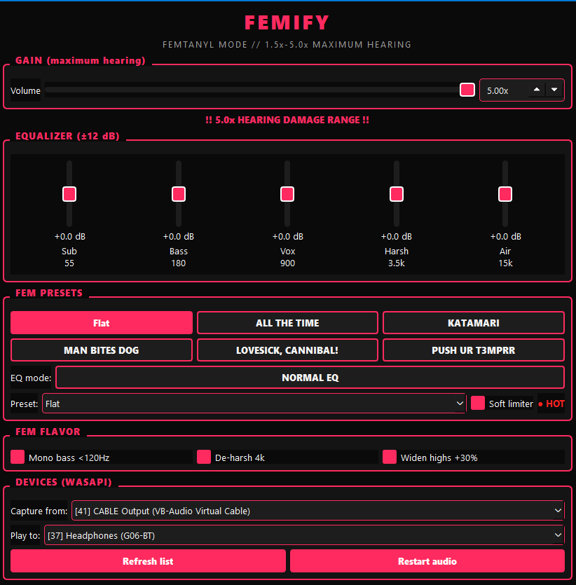
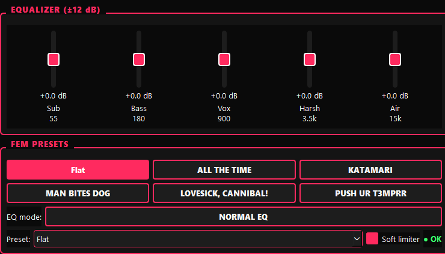

Femify
A Windows audio enhancer tuned specifically for femtanyl — ALL THE TIME / KATAMARI / MAN BITES DOG / LOVESICK, CANNIBAL! / PUSH UR T3MPRR. Push gain 1.5x–5.0x, shape with a 5-band (or advanced 10-band) EQ, mono the bass, de-harsh the highs, widen the stereo image, and land on a musical soft-knee limiter.
Windows 10/11 · WASAPI · Requires VB-Audio Virtual Cable · v1.1.0

What it does
Route Spotify through VB-Cable, capture it in Femify, and play the enhanced signal to your headphones.
1.5x – 5.0x gain
Push already-hot masters harder. Hearing-damage warning lights at 3.5x+. Limiter recommended, never forced.
5-band + advanced 10-band
Sub 55 · Bass 180 · Vox 900 · Harsh 3500 · Air 15000. Toggle advanced ±32dB mode behind a 5s hearing gate.
Fem presets
Flat, ALL THE TIME, KATAMARI, MAN BITES DOG, LOVESICK, CANNIBAL!, PUSH UR T3MPRR — one click.
Mono bass <120Hz
Tighten the low end, keep the punch. On by default.
De-harsh @4k
-3dB notch in the harshness zone. On by default.
Widen highs +30%
Mid/side stereo widening on the highs only. Off by default.
Musical soft-knee limiter
Tanh shoulder 0.80 → 0.99. Transients below the knee pass untouched; overs get rounded, not flat-topped.
Per-mode EQ memory
Switching normal ↔ advanced restores your previous EQ. Settings persist to %APPDATA%\Femify.
System tray
Runs in the tray, keeps processing while you listen.
Signal chain
Every block, in order.
Presets
One-click femtanyl tunings.

Ready to push it?
Download the Windows build and read the setup guide before you turn it up.